コラム
一枚の絵
僕の部屋の壁に、１枚の絵が掛かっている。
山深い渓流の源流部、その細い流れのわずかな淵、というより小さな深みを描いた絵である。描かれたのはニュージーランド南島西海岸、サウス・ウェストランドと呼ばれる地方の山奥であろう。額縁の裏書きには、Falls Creek とある。描いたのは画家のブリント・トロレイ（Brent Trolle) 氏である。
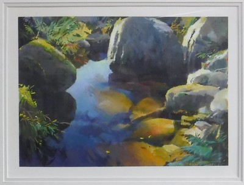
この絵には不思議な特徴というか魅力があり、間近で見ただけでは解らないが、５、６メートルほど離れて少しの時間眺め続けていると、突然画面に奥行きが生まれ、フレームの中に吸い込まれそうになる瞬間を覚えるのである。
おそらくは産卵期のブラウントラウトが遡上してきたり、ニュージーランド原産のココプと呼ばれる小型の淡水魚が棲息しているであろうこの小渓流の風景を眺めていると、僕の心には、あの懐かしく、素晴らしいウェストランドの釣りが、今もありありと甦るのである。
この絵を描いた画家、ブリント・トロレイ氏は、1975年に REED社より出版された彼の画集「WESTLAND」によれば、
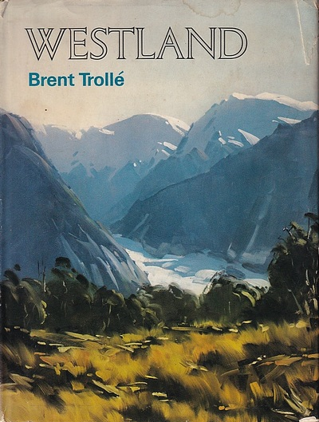
1947年にニュージーランド北島のウェリントンに生まれ、その後ホキティカに移り、1960年に設立されたウェストランド国立公園のナショナルパーク・オーソリティー（The National Parks Authority）所属のレンジャーとして勤務した後、フルタイムの画家となった。そして彼は作品をニュージーランド全土、パシフィック諸島、カナダ、アメリカなどで作品を公開・展示し、成功を収めてきた。現在彼はホキティカのスタジオ兼ギャラリーから制作旅行でネルソン、カンタベリー、オタゴ地方などを訪れ、ウェストランドと同じく風景画を描いている。
とある。
ブリントさんの作品は、ホキティカの町中にあるギャラリーと、町並みを見下ろす高台にある彼の邸宅に隣接するアトリエ兼ギャラリー、それと彼のウェブサイトなどで見ることができる。www.brenttrolle.co.nz/
このサイトに載っている紹介文には、ブリントさんは少年時代から絵を描くことが好きで、父に連れられてたくさんのギャラリーを訪れ、1940-1970年代の初期のニュージーランドの画家たちの作品を賞賛し、憧れを抱いたことが記されている。また、あるカンタベリー地方のギャラリーを訪れた際に、当地の有名な画家、オーステン・ディーンズ氏と会うという幸運に恵まれたともある。
僕が'98年に初めてブリントさん宅を訪れた際、ディーンズ氏の作品が１点、居間に飾られているのを見たことがある。確かにブリントさんの作品を見ていると、ディーンズ氏から影響を受けているようにも感じられた。
1997年1月、人生初の海外釣行でニュージーランド南島西海岸を訪れ、これも初めてのヘリ・フィッシングで原生林の生い茂る山奥の川に入った。２泊３日のキャンプをしながらブラウンを狙ったものの、１回掛けてバラしただけ、まさかのボウズ！ という結果に終わり、僕はかなり失意の底に沈んでいた。見かねたガイドのビル・アリソン氏が、僕を湖から流れ出す川でのイブニング狙いに連れ出してくれた。
湖畔のロッジから川へ向かう途中、白いトヨタのピックアップトラックとすれ違った時に、ビルさんがクラクションを鳴らして車を急停車させ、トヨタのドライバーに声を掛けた。その人がブリント・トロレイ氏であった。当時ブリントさんは、本職である画家業のかたわら、「アルパインハンティングサービス」というハンティングとフィッシングのガイドを行うビルさんの会社のアシスタントガイドとして働いていた。ビルさんが気を利かせてくれ、失意のどん底にあった僕の明日から２日間の釣りに、ブリントさんをガイドとして付けてくれたというわけだった。
翌日からのブリントさんと行った１泊２日の釣りは、こちらに詳しく記してあるが、遙かなる原野の中を雄大に流れる大河を遡行した、徒歩往復16kmの釣りにおいて、僕はようやく大物ブラウンの強烈なファイトと壮麗なジャンプを、ブリントさんの卓越したガイド能力により堪能することができた。そしてウェストランドの鱒や大自然の魅力、さらにはニュージーランドという国の素晴らしさにすっかり心を奪われてしまったのだった。
翌'98年、ウェストランドの釣りに恋い焦がれていた僕は、会社の同僚で、毎週一緒に釣りに行っていた川本君を誘い、再びNZへの釣行計画を立て始めた。
昨年の釣行の終わりに、ビルさんから、「次に来るときには私に直接手紙をくれれば、代理店を通すよりも安く釣りが出来るからな」と言われていたので、僕は辞書を引き引き拙い英文手紙を書き、エアメール（懐かしい響き！）で数回のやり取りを重ね、ウェストランドでのフライフィッシングのベストシーズンである11月下旬に再訪することになった。
この'98年の釣行記は、あまりに出来事が多すぎたのと多忙だったこともあって未だに一連の写真集の形でしか書けていないのだが、初めての海外釣行を体験した川本君も素晴らしい釣りを体験することができた。
この年、僕たちは初めて、ブリントさんの３男で、現在は農場経営、報道・観光PRのための映像作成業・フィッシングガイドとして精力的に活躍しているディーン君と出会ったのだった。当時ディーン君はまだあどけなさの残る Late teens であったが、釣りの腕前とガイドとしての技量は確かで、有名な田代法之氏がビデオ撮影のためにウェストランドを訪れ、ビルさんと共に釣りをした時も、ディーン君は田代氏のガイドを務めたのだった。
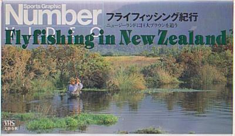
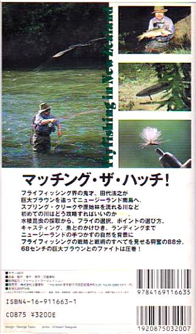
その時ディーン君は、自分の「庭」とも言えるスプリングクリークで的確に鱒をスポットし、田代氏が見事に大物をキャッチする手助けをしたのであった。
この'98年11月から12月にかけての釣行の後半では、川本君と僕は、ホキティカの町を見下ろせる高台に建つブリントさんの素敵な自宅に泊めてもらい、ブリントさんの父上が使われていたという古いバンブーロッドを見せてもらったりした。
そして、ディーン君とブリントさんお二人によるガイド！という贅沢な環境で、田代氏も釣ったというあのスプリングクリークで、心臓に悪いほど緊張・興奮・感動するサイトフィッシングの魅力をとことん味わうことが出来た。
さらに嬉しかったのは、奥さんのグレースさんが得意の裁縫の腕をふるって、僕たち２人に揃いのフリース製防寒ベストを作って下さったのである。グレースさんの作品はとても凝っていて、彼女のオリジナルタグが襟元に縫い付けられていた。僕はそのネイビーブルー色のベストを今も大切にしており、今年2018年11月の釣行にも持って行くことにしている。
また、その時に、ディーン君のすぐ上のお兄さんであるランス君にも会うことが出来て、皆で豪華なディナーを頂いた。ランス君も父上に似て芸術家肌で、当時トロレイ宅の廊下には彼が製作したレインボートラウトの絵が飾ってあった。この絵にはちょっと仕掛けが施されており、三角柱の二面に分けてレインボーの頭部と尾部とが描かれていた。額を通り過ぎる時に絵柄がガラッと変化して観る人の眼を楽しませてくれるのであった。

そのランス君も現在は奧さん、二人の子供と一緒に南島北部にあるネルソンの町で、額装の仕事を営みながら幸せに暮らしているそうだ。
翌'99年、僕はとうとうニュージーランドへ留学そして永住することを決意し、それまで丸10年間勤めた名古屋の建設コンサルティング会社を3月末で辞め、5月にオークランドに渡り、現地の語学学校に入学した。すっかり英語力が落ちて、というかほとんど消滅していたので語学学校ではなかなか苦労させられたが、非常に運の良いことに語学学校がホームステイ先として選んでくれたのが、親日家、読書好きで料理の上手なジョー・ハーマン夫人の家だったので、日常生活は楽しかった。何しろ毎朝電子レンジで20分ほどかけて炊いてくれたホカホカの白米での卵かけご飯、インスタントではあったが味噌汁を出してくれたのだ。週末にはオークランド市内の古書店数カ所を回り、興味深く、貴重な魚類学の本とか釣りの本を購入することが出来た。
学業のかたわら、じきにキャスティング用の釣り竿とリール、ジグなどを購入し、週末はバスで街はずれの小さな岬まで足繁く通うようになる。キルウェルの4ピースフライロッドも購入し、海でのフライ釣りも楽しんだ。自分の耳を釣って大騒ぎになったこともあった。（笑）
語学学校での英語学習も順調に進み、11月にはハミルトン市にあるワイカト大学の大学院への入学に必要な英語検定試験 IELTS の合格点を取ることが出来た。入学審査に必要な書類も全て提出し、あとは合否の連絡を待つのみとなった。
1999年12月14日、僕は9日間語学学校の休みを取り、３度目となるウェストランド訪問の旅へと出掛けた。
ホキティカに住むブリントさんやディーン君とは、ホームステイ先から電話や電子メールでまめに連絡を取り合っており、クリスマス休暇で釣り人が多くなる前に１度、遊びに来いよとお招きを頂いていたのだ。オークランドからクライストチャーチまでは国内線の飛行機で行き、ホキティカまではシャトルバスのアルプス越えルートで行った。ホキティカに着くと、町中のバス停でブリントさんとディーン君がにこやかに出迎えてくれた。
15日はディーン君とスプリングクリークの釣りを楽しみ、翌16日より立派なフィッシングボートをトレーラーで牽引したブリントさんの車でステートハイウェイ6号線をひたすら南下し、サウス・ウェストランドの湖を釣り歩いた。釣りの拠点となる宿はブルースベイにあるホキティカアングラーズクラブ所有のロッジだった。'98年の釣行で川本君と泊まった、あのロッジである。
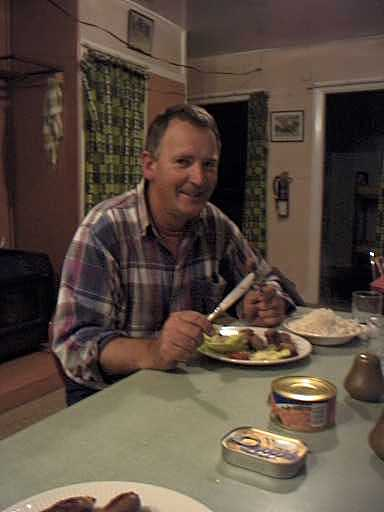
ブリントさんは、ポイント間の移動で船外機を使う時以外はずっとアルミボートをオールで漕いで僕に釣らせてくれた。
とある湖では、黒いラビットフライ（ストリーマーの１種、ウーリーバガーに似ている）を使い、倒木の下に潜んでいた大物ブラウンを掛け、ボートを引っ張られながらもなんとか取り込んだ。（笑）
そのブラウンは、おそらく僕の生涯最大の１尾だったと思う。
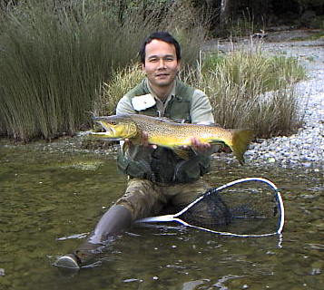
2泊3日で辺りの湖を探り歩き、17日の夕方ブルースベイを発った。ロッジからホキティカまではおよそ200km、3時間のドライブである。途中、ブリントさんはフランツ・ジョセフ氷河近くの道路脇に車を停め、
「疲れたから30分ほど仮眠を取るので、近くの売店見物でもしてきな」
と言った。がっしりとした体躯でエネルギッシュなブリントさんも、この3日間は僕に釣らせるためにボートを漕ぎっぱなしだったのでさすがに疲れが出たのだ。とてもありがたく、同時に申しわけ無い気持ちになった。
僕はブラブラと歩いて売店に入り、カラフルな絵葉書や置物、キウィのぬいぐるみなどを見て回った。すると、売店の壁に額装された絵が10点ほど飾ってあった。どれも見覚えのある画風の、ブリントさんが描いた作品である。ウェストランドの山々や氷河、湖の畔の原生林、タスマンの海岸などの風景画である。じっと眺めて鑑賞していると、その中の１点に、何故かとても惹き付けられるものがあった。絵のサイズは30cm×22cmほどでそれほど大きな作品ではないが、小渓流の淵、その水面に反射する光がキャンバス上に見事に捉えられており、実に美しい。
そこで僕は、これまでいろいろとお世話になってきたブリントさんへの御礼として、この絵を購入することに決めた。売店のお嬢さんに、あの絵を下さいと言うと、
「私もあの作品が気に入っているのよ」
と答えた。ただ、この場で買って車に持ち帰るのは、ブリントさんに対してかなり恩着せがましくなると思ったので、そのお嬢さんに、僕がこのウェストランド釣行を終え、ブリントさん宅を発った後で、オークランドのハーマン夫人宅に発送して欲しいとお願いした。すると彼女は、
「なるほどね！」
と事情を察してくれた。そのお店で買い上げられた絵は、いったんホキティカのブリントさん宅に送られ、そこで彼自身の手で梱包されてからお客さん宅まで送られるのよ、と説明してくれた。
それでは僕がブリントさん宅を発った後で発送をお願いしますね、と念を押し、クレジットカードで支払いを済ませ、もう少し店内を見物し時間をつぶしてから車に戻った。
ブリントさんは仮眠でリフレッシュ出来たらしく、再び元気に運転を始めた。
ウェストランドでの釣行を終え、ブリントさん一家に別れを告げた僕は、グレイマウスからクライストチャーチを結んでいる鉄道路線、景観の美しさで世界的に有名なトランツ・アルパイン急行での旅を楽しみ、さらに鉄道でカイコウラ、ピクトンへ移動し、フェリーでクック海峡を渡りウェリントンへ向かった。ウェリントンからオークランドへは、北島を縦断する列車に乗り、いささか疲れたが、クリスマス直前の12月23日にオークランド駅に着いた。駅にはハーマン夫人が迎えに来てくれており、長旅の疲れをいたわってくれた。
1999年12月31日の大晦日、世界中が懸念、心配していたコンピューターの西暦2000問題も、別段大きな異常も無く年が明け、2000年の正月をオークランドで迎えた。1月中旬になってホキティカから大きな包みが郵送されてきた。ブリントさんが僕の買った絵を送ってくれたのだ。丁寧な梱包を開封し、慎重に額縁を取り出した。自分の部屋に架け、ハーマン夫人に見せると、「これは素晴らしい絵だわね！」と喜んでくれた。
御礼を言うためにホキティカに電話をすると、ブリントさんは
「ゴウ、やってくれたなぁ！」
と笑った。
2000年2月下旬、いよいよ大学のあるハミルトンへ引っ越すこととなり、ブリントさんの絵は、届いたときの梱包材にそのまま入れ直し、船便で日本の実家へと送り出した。
大学院の入学式、留学生の歓迎会、新入生向け各種ガイダンスなどが次々と行われ、僕のハミルトンでの大学院生活が始まった。膨大な資料を読みこなさなければならない宿題や、ネイティブスピーカーの若い学生さん達に混じってのディスカッションに苦労しつつ、あっという間に日々が過ぎていった。
そんな大学院での生活も、2002年の2月に再発した持病の躁鬱病のために、2002年の暮れに終わりを告げた。不本意ながら帰国した僕は、実家で父と２人暮らしを始めた。
オークランドから届いていたブリントさんの絵は、包みを開けて茶の間の長押に架けた。薄暗い旧家の茶の間が、その絵の周りだけ雰囲気が変わり、ウェストランドの光に包まれた。
こうしてその絵はニュージーランドから遙か離れた日本の山間僻地の東栄町で、長い間古い民家の長押に飾られていた。そして2010年、実家の父が高齢で体が弱くなり、若干認知症気味になったこともあって豊橋の叔母の家でお世話になることになった。これで実家は空き家となり、ブリントさんの Falls Creek の絵は誰も見る人が居なくなってしまった。
2010年11月21日より、僕は友人の鰐部さんと連れだって、4回目のウェストランド釣行に出発した。
この旅では、前半21日～26日までディーン君と３人でサウス・ウェストランドやホキティカ近郊の湖などを釣り歩いた。この時、鰐部さんもブリントさんに依頼して描きあげてもらった絵を１点購入している。それはマウントクック近くの渓流から主峰を見上げた構図となっている。
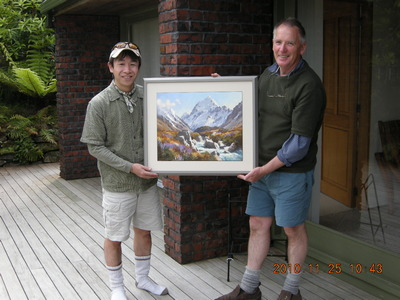
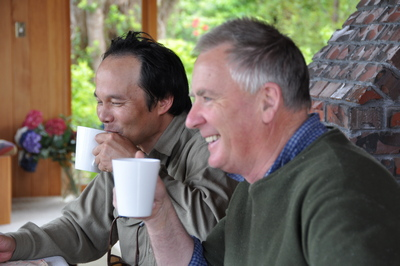
その後、鰐部さんが帰国してから、僕はまたしてもブリントさん宅に居候して、今度は彼とサウス・ウェストランドへ再びとって返し、湖や奥深い原生林の川を釣り歩いた。ブリントさんは、僕のために湖畔のロッジを３泊分も手配してくれた上に、毎日手料理を振る舞ってくれた。
釣りに出撃する前には、毎朝ブリントさんのジョーク混じりの四方山話を楽しませてもらった。そのうちに、ふとブリントさんは、神妙な顔で僕に向かって打ち明け話を切り出した。
「タケシ、実はなぁ.......」
聞いてみると、初めて一緒に釣りをした'97年1月16日のこと、僕が掛けた大物ブラウンをなんとか岸辺まで寄せてきて、あと１歩の所でランディングに失敗したのは、自分のミスだったと、ブリントさんは告白したのだった。
あの時、すでに彼は自分のミスだったと言って謝ってくれていたのだが、13年も後になってから再び話してくれたのは、僕に対してよほどすまなかったと思っていたのと、あのブラウンがそれだけ大きかったという証拠だと思う。長い間ずっと気にしてくれていたブリントさんの真摯な心に僕は胸が熱くなった。
ブリントさんの本職は、もちろん画家なのだが、その釣りの腕とフィッシングのガイドとしての実力は本当に凄いものがある。2010年のサウス・ウェストランド遠征では、ブリントさんが数多ある川の中でも１番気に入っているという山岳渓流を釣ったのだが、その川のとある瀬尻で彼は１尾の良型ブラウンを掛けた。僕が目を瞠ったのは、彼の取り込みの素早さである。僕があのサイズを掛けていたら対岸のカバーに逃げ込まれるか、下流に突っ走られるかで相当苦労させられると思われるが、ブリントさんは軽々と鱒をいなし、あっという間に大型ネットに取り込んでしまった。そのランディングネットもどうやって背中の大型リュックに装着しているかは判らないが、簡単に脱着が出来るようだ。
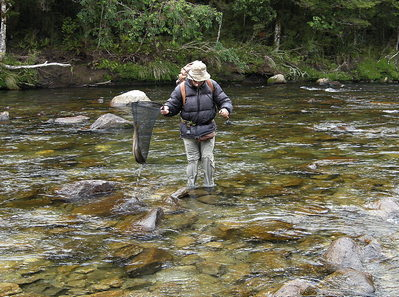
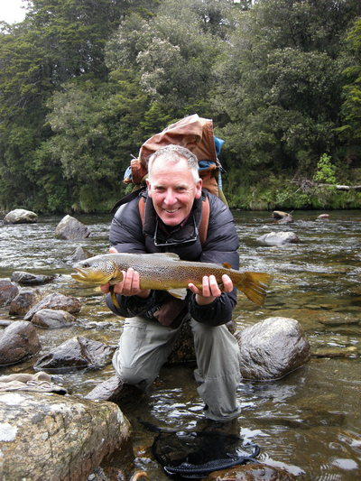
また、息子のディーン君のような華麗なキャスティングではないが、降海型のブラウンを狙って対岸のポイントを攻めつつ釣り下る時、あるいは湖畔の岸沿いをブラインドで刻んで行く時など、合理的で無駄の無いロッド捌きと手元のライン処理の巧みさで、実に効率的に釣って行く。
'97年の彼との初めての釣行で、釣りの合間に、これまで１日に最高何尾の鱒を釣り上げたことがあるのですか？ と訊ねたことがあった。ブリントさんは
「うーん、そうだなあ。生涯では１日に90尾が最高かな。この川だと１日で48尾だったような気がする」
と答えてくれた。まるでワカサギ釣りのようなその数に、僕は心の底から驚いてしまった。ニュージーランドの鱒なら５尾も連続して釣れば腕が痛くなってしまうだろうに、あの技量に加えてとてつもない腕力と体力をこの人は持っているのだなぁと感嘆した。
また彼はフライタイイングにも秀でており、現在はいささか老眼になったそうだが、大きな拡大鏡を取り付けたバイスで、フィッシングのガイドをしている息子のディーン君が使うフライや自分用のフライの数々を巻いている。'99年の釣行では、湖のブラウンに効くという黒いラビットフライ（ウーリーバガーに似ているストリーマー）の巻き方を、彼の家の居間に持ってきたバイスで実地指導を受けたりした。
また、今回は、彼のオリジナルかどうかは判らないが、「L」と呼ばれる緑色に輝くごく小さなビーズヘッドニンフを巻いてくれて、そのフライがあまりに効くので驚いたものである。
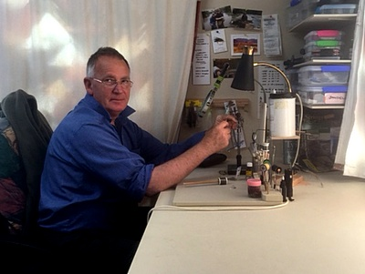
今回の遠征では、コテッジの宿泊費を払おうとするとブリントさんは、
「タケシは我が家のゲストだからな」
と言って、すべて自分で払ってくれた。僕はいつもながらの彼の親切と歓待にまたしても深く感謝した。いつの頃からか、ブリントさんは僕のことを、ニックネームの「ゴウ」ではなく、本名の「タケシ」と呼ぶようになっていた。その訳を尋ねると、
「人をあだ名で呼ぶのはあまり良いことじゃないからな」
と、彼は答えた。
長い居候釣行も終わり、ホキティカの小さな空港で別れを告げるにあたり、僕は再会を祈念してブリントさんと一緒に写真を撮した。
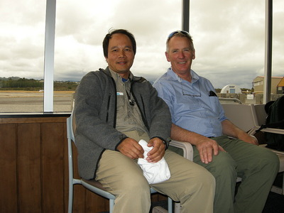
つい最近、2018年の夏、ブリントさん夫婦はアメリカに移住した長男のジャスティン君一家を訪れ、近くの川でのフライフィッシングを楽しんで来たそうだ。彼の話によれば、ソフトハックルフライをダウン・アンド・アクロスで流し、時折少しアクションを付けてやると爆発的に効いたぞ！とのことであった。ニュージーランドに帰ってから、10月のシーズンオープンに近所の川で試したところ、やはり大当たりだったそうだ。
僕がテンカラ釣りやフライフィッシングにのめり込み、新潟や長野、岐阜の山奥でイワナを追いかけていた80～90年代、一生のうちに１度は海外の大物鱒を釣ってみたいものだと憧れ、アメリカ、カナダ、ニュージーランドの様々な候補地の中から選び出したのが、ニュージーランド南島西海岸のウェストランド地方だった。なぜウェストランドだったかと言えば、釣りに詳しい旅行代理店のパンフレットに謳われていた、「原生林の川での大物ブラウンをサイトフィッシングで！」というキャッチコピーに魅了されたからである。鬱蒼と茂る森の中を流れる山岳渓流で釣り上げられたブラウンの、輝ける茶色というよりむしろ黄金色に近い体色は、僕の想像力をかき立てた。
'97年1月の最初のウェストランド釣行では、ビル・アリソンさんがメインのガイドを務めてくれ、アシスタントのデビッドさん、そして運命的な出会いとなったブリントさんが一緒に釣りをしてくれた。思えばこの時のブリントさんとの巡り会いが、この後の僕の人生を大きく変えたのだ。ニュージーランドの他の地方の人々からは「Coaster」と呼ばれる、ウェストランドに住む人々が持つ素朴で質実剛健、自立心が強く、とても友好的で親切な気質に感激し、こんな国に住んでみたいなと思わされた。そしてとうとう永住を目指して'99年からの留学に至ったのである。
話は変わるが、ブリントさんはとてもジョークが好きで、しかも上手であり、釣りの合間の遡行の時やドライブの最中にしょっちゅういろんなジョークを飛ばして僕を楽しませてくれる。誰に対してもオープンマインドで、'98年に初めての海外釣行を体験した川本君も、ウェストランドでのサイトフィッシングではかなり苦労したが、ガイドしてくれたブリントさんの人柄や懐の広さにずいぶんと助けられたと思う。それは僕も同じである。このジョーク好きな性格は、三男のディーン君にもしっかり受け継がれており、彼もまたジョークが上手く、何かあると面白い言葉がポンポンと飛び出してくる。お二人の性格はとても明るいので、たとえ釣りでミスをしでかしてもすぐに励ましてくれるので、緊張せずリラックスして釣ることができ、とてもありがたい。
僕が釣りを通じてブリントさんから教わったことの中で、一番心に残り、役立っているのは、
「Every time be positive!」
という言葉である。１日中釣れないとき、大物を釣り逃したとき、リーダーが絡まったとき、落とし物や忘れ物をしたとき、どんな時もいつでも前向きに、積極的に、希望を忘れるな！という教えである。渓流の次のカーブを曲がったら、素晴らしい型の鱒がライズしているかもしれない.......。だから決してめげるな、あきらめるな！ というアドバイスなのだ。これは釣りにおける心構えのみにとどまらず、人生を渡って行く秘訣でもあると思う。
いつだったかは忘れたが、１度、釣行の帰り道、運転しているブリントさんに、
「絵を描くのと、釣りをするのとどちらが好きですか？」
と訊ねたことがあった。すると彼は
「そりゃもちろんペインティングさ！」
と即座に答えた。僕はそれを聞いて、
『ああ、この人は本当に自分の仕事を愛しているんだなぁ.......』
と感じ入ったものだ。
ブリントさんが描くのは主に風景画なので、必然的に、創作活動は屋外で行うことになる。例の巨大なバックパックに必要な荷物を詰め、カンバスとイーゼルを抱え、ウェストランドの海岸線や辺境の山奥に踏み込んでのペインティングにいそしむのだ。
1975年に出版されたブリントさんの画集「WESTLAND」に描かれている山や湖、森や川の絵を見ると、現在彼が描いている作品は、当時と比べてだいぶ画風が変化しているようだ。絵のタッチがだいぶ繊細かつ精密になってきていると思う。また、ブリントさんの作品群の中で、特に秀でているなぁと感じるのは、海面、湖面、川面などの水の描写である。周辺の様々な光を受けて反射する水面が、実に見事に捉えられている。
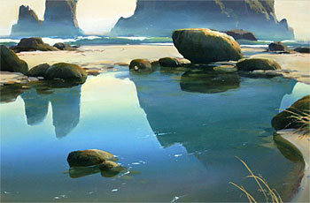
出典：AUSTRALIAN ART SALES DIGEST
この、ニュージーランド南島西海岸のどこかにある、ひっそりと静まった潮だまりを描いた作品では、彼の水面表現の巧みさが遺憾なく発揮されていると思う。また遠景のかすみも実に見事に表現されている。
彼のウェブサイトのオンラインギャラリーでは、ウェストコースト、カンタベリー、オタゴ、ネルソン、マウントクック、ウェリントン、その他、アメリカ合衆国というようにジャンル分けがされており、スライドショーも楽しめるようになっている。
また、このギャラリーでは、大自然の中でのブリントさんの制作風景も見ることができる。
変わりやすいニュージーランドの天候の中、時にダウンジャケット、時に雨具のポンチョ、あるいはウールのジャケットという姿で大自然を見つめ、カンバスに向かう彼の姿を見ると、風景画を描くというのは本当に大変な作業なのだなと思い知らされる。その彼の情熱が額縁に収められて、絵を見る人々の心を打つのだろう。
'99年の釣行の途中でブリントさんに、どうやって絵を描くことを学んだのですか？ と訊ねると、彼は自分の額をコンコンと人差し指で叩いて静かに微笑した。誰か有名な画家に師事したわけでもなく、芸術学校に通ったわけでもなく、長い年月をかけて独学であの素晴らしい技巧を習得したらしい。
2017年11月の末に僕の父が亡くなり、空き家だった実家は、2018年の11月、そこを気に入って住みたいと言ってくれたある人が購入してくれることになった。膨大な父と僕の蔵書や屋根裏のガラクタ、蔵の中の古い家財道具など、一切合切を兄が処分して実家は完全に片付けられた。ブリントさんの絵は僕が豊橋に持ち帰り、部屋の壁に飾られた。
今年、2018年の11月20日から、僕は５回目となるウェストランド釣行に出かける。ディーン君と共に４日間の釣りを楽しみ、そのうちの半日くらいは時間を取ってホキティカのブリントさん宅を訪ね、またいろいろと面白い話を聞かせてたらと思っている。そして、これまで彼がしてくれたすべての親切と、彼との出会いが僕の半生をとても素晴らしいものにしてくれたことに対して、とても言葉では言い尽くせないのだが、せめてものお礼を言うつもりだ。
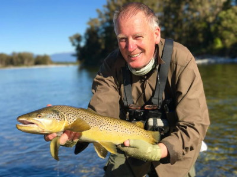
2017/03 撮影：ディーン・トロレイ氏
コラム 目次へ
サイトマップ
ホームへ
お問い合わせ